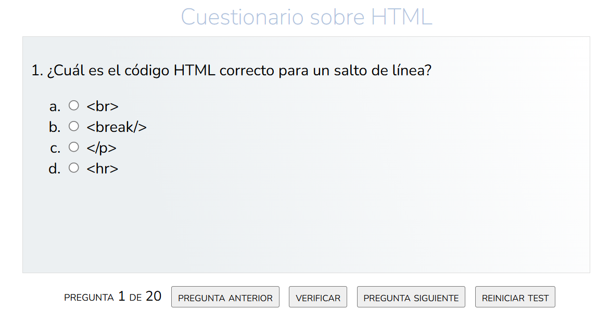

Para desarrollar el test deberás crear una clase Pregunta y un array de preguntas

La clase pregunta deberá tener como atributos: el texto de la pregunta, el texto de las 4 opciones, la opción correcta, la opción seleccionada, los puntos de la pregunta y los puntos asignados. Además deberá tener un atributo denominado justificacion que explique porqué la pregunta x es la correcta. El botón verificar deberá indicar si la pregunta es correcta o no, guardar el/los puntos asignado(s) en caso de ser correcta y mostrar un modal con la justificación.
Cada vez que el contenido de los objetos del array preguntas cambie, su contenido se deberá guardar en el Session Storage.
Al finalizar el test, el programa deberá leer el array del Session Storage e imprimir su contenido en pantalla.
Modifica el programa Lista de Compras (Se encuentra en el enlace Ejercicios con arrays) de la siguiente manera:
LocalStorageLocalStorage y si la lista está guardada en el navegador, se deberá cargar en memoria para continuar trabajando.LocalStorage.Calcular estimado a gastar que indique cuánto se estima gastar para comprar todo lo de la listaAgrega un botón al test que permita cambiar su tema de dark a ligth y viceversa.